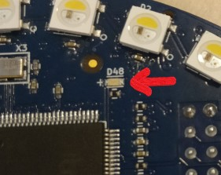

Microprocessor (MCU)
Flashing Guide
⚠️Modifying MCU source may have unintended consequences⚠️
Device Compatibility

Overview
The MCU handles:
- Interfacing with and processing sensor data
- Calculating Yaw, Pitch, Roll
MCU Source
MCU source code is located here.
MCU Flashing
Below is a guide on how to flash modified source onto the Atmel SAM3S MCU for the MATRIX Creator.
For this guide, the source code will be modified to disable the blue blinking led (labeled D48 on board), which is controlled by the MCU.

We first need to install a few prerequisites.
Add the MATRIX repository and key.
curl https://apt.matrix.one/doc/apt-key.gpg | sudo apt-key add -
echo "deb https://apt.matrix.one/raspbian $(lsb_release -sc) main" | sudo tee /etc/apt/sources.list.d/matrixlabs.list
Update your repository and packages.
sudo apt-get update
sudo apt-get upgrade
Install the required packages.
sudo apt-get install matrixio-creator-init git gcc-arm-none-eabi
Reboot your device.
sudo reboot
Then, clone the MCU source repo.
cd ~/
git clone https://github.com/matrix-io/matrix-creator-mcu.git
Edit the file matrix-creator-mcu/creator/main.cpp, commenting out line 82. This change disables the blue blinking led.

Then build the modified MCU source.
cd ~/
cd matrix-creator-mcu/creator/
make
Backup the stock ch.bin file.
sudo mv /usr/share/matrixlabs/matrixio-devices/blob/ch.bin /usr/share/matrixlabs/matrixio-devices/blob/ch_stock.bin
Copy your built ch.bin file to the blob folder.
cd ~/
cd matrix-creator-mcu/creator/
sudo cp ./build/ch.bin /usr/share/matrixlabs/matrixio-devices/blob/ch.bin
Now you can flash the MCU.
cd /usr/share/matrixlabs/matrixio-devices/
sudo openocd -f cfg/sam3s_rpi_sysfs.cfg
The last part of the openocd flashing command output should be the following (may vary due to user-provided file).
flash 'at91sam3' found at 0x00400000
wrote 36636 bytes from file blob/ch.bin to flash bank 0 at offset 0x00000000 in 4.665386s (7.669 KiB/s)
Info : JTAG tap: em358.cpu tap/device found: 0x3ba00477 (mfg: 0x23b (ARM Ltd.), part: 0xba00, ver: 0x3)
Info : JTAG tap: em357.bs tap/device found: 0x069aa62b (mfg: 0x315 (Ember Corporation), part: 0x69aa, ver: 0x0)Info : JTAG tap: xc6sxl4.fpga.fpga tap/device found: 0x24000093 (mfg: 0x049 (Xilinx), part: 0x4000, ver: 0x2)
Info : JTAG tap: sam3n.cpu.cpu tap/device found: 0x4ba00477 (mfg: 0x23b (ARM Ltd.), part: 0xba00, ver: 0x4)
Warn : Only resetting the Cortex-M core, use a reset-init event handler to reset any peripherals or configure hardware srst support.
shutdown command invoked
In order to maintain compatibility with the matrixio-creator-init package, you'll need to backup the original mcu_firmware.version file, and create your own.
cd /usr/share/matrixlabs/matrixio-devices/
sudo mv /usr/share/matrixlabs/matrixio-devices/mcu_firmware.version /usr/share/matrixlabs/matrixio-devices/mcu_firmware_stock.version
(./firmware_info | grep MCU) | sudo tee mcu_firmware.version
Updating the matrixio-creator-init package will cause the stock FPGA bitstream to be flashed upon next boot.
You can stop sudo apt-get upgrade from automatically updating the matrixio-creator-init package with the following command.
sudo apt-mark hold matrixio-creator-init
Power off your device.
sudo poweroff
Wait until the green led on your Raspberry Pi blinks 10 times, then unplug the power cable from your Raspberry Pi.
Plug the power cable back into your Raspberry Pi.
Restore Original Firmware
To restore the original firmware, restore the stock ch.bin file in the blob folder.
sudo rm /usr/share/matrixlabs/matrixio-devices/blob/ch.bin
sudo cp /usr/share/matrixlabs/matrixio-devices/blob/ch_stock.bin /usr/share/matrixlabs/matrixio-devices/blob/ch.bin
Now you can flash the MCU.
cd /usr/share/matrixlabs/matrixio-devices/
sudo openocd -f cfg/sam3s_rpi_sysfs.cfg
The last part of the openocd flashing command output should be the following.
flash 'at91sam3' found at 0x00400000
wrote 36636 bytes from file blob/ch.bin to flash bank 0 at offset 0x00000000 in 4.665386s (7.669 KiB/s)
Info : JTAG tap: em358.cpu tap/device found: 0x3ba00477 (mfg: 0x23b (ARM Ltd.), part: 0xba00, ver: 0x3)
Info : JTAG tap: em357.bs tap/device found: 0x069aa62b (mfg: 0x315 (Ember Corporation), part: 0x69aa, ver: 0x0)Info : JTAG tap: xc6sxl4.fpga.fpga tap/device found: 0x24000093 (mfg: 0x049 (Xilinx), part: 0x4000, ver: 0x2)
Info : JTAG tap: sam3n.cpu.cpu tap/device found: 0x4ba00477 (mfg: 0x23b (ARM Ltd.), part: 0xba00, ver: 0x4)
Warn : Only resetting the Cortex-M core, use a reset-init event handler to reset any peripherals or configure hardware srst support.
shutdown command invoked
Restore the stock mcu_firmware.version file.
sudo rm /usr/share/matrixlabs/matrixio-devices/mcu_firmware.version
sudo cp /usr/share/matrixlabs/matrixio-devices/mcu_firmware_stock.version /usr/share/matrixlabs/matrixio-devices/mcu_firmware.version
Allow sudo apt-get upgrade to update the matrixio-creator-init package.
sudo apt-mark unhold matrixio-creator-init
Power off your device.
sudo poweroff
Wait until the green led on your Raspberry Pi blinks 10 times, then unplug the power cable from your Raspberry Pi.
Plug the power cable back into your Raspberry Pi.